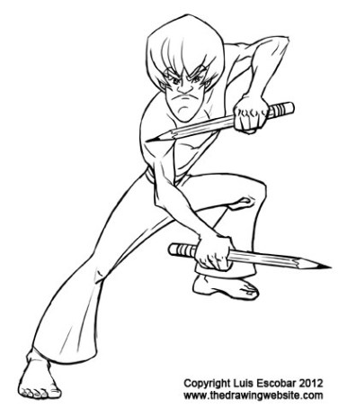

You can't seem to get it down the first time. You know what you want but you don't know how to get there.
You understand the concepts being taught. You're trying to apply them. You're doing the exercises but you're getting frustrated.
The truth is, when you put down a line to draw a face, a circle, or a stick figure body, you either don't know where it will end up when your done, or you do know, but it just ends up somewhere else.
That blank page has no "foot holds". You wish you had an "anchor" or SOMETHING to guide you, so that you know where to place your pencil as you draw.
Well, that's where tracing comes in.
What's that? You thought tracing was bad?
Well, it CAN be. It depends on how you use it.
In this lesson, you'll learn how to use tracing to refine your drawings and your control over what happens on the page. By the time we're done, you'll know how to set down the guides that will help you control the most complicated types of drawing.
I know of very few professional draftsmen who can just pick up a pencil, start in one corner of the page, and magically have a finished art piece in one pass. Those guys are the legends.
That's not us...at least...not yet.
The majority of professional, do what is called an "under drawing".
An "under drawing" is a rough pass, or trial run for a drawing. Like a rough draft in writing. It's not meant to be perfect by any means.
The purpose of the under drawing is to explore the direction you want to take the drawing and solve any problems the drawing asks you to solve. It's meant to be sloppy and imperfect. It's there so you're final drawing looks good.
Most beginners never do this. Have you been doing it? I didn't think so.
So what does this have to do with tracing?
Well, once the under drawing is done, you then draw over your under drawing, either directly, or on top with another piece of paper, "tracing" the final lines of your drawing.
There are two kinds of tracing, the bad kind and the good kind:
